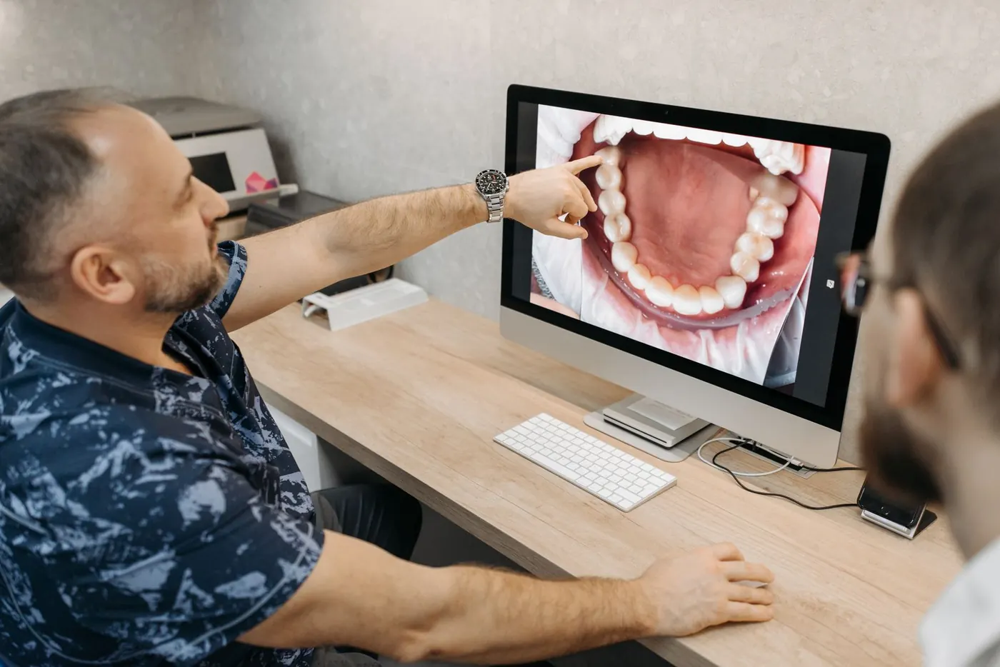
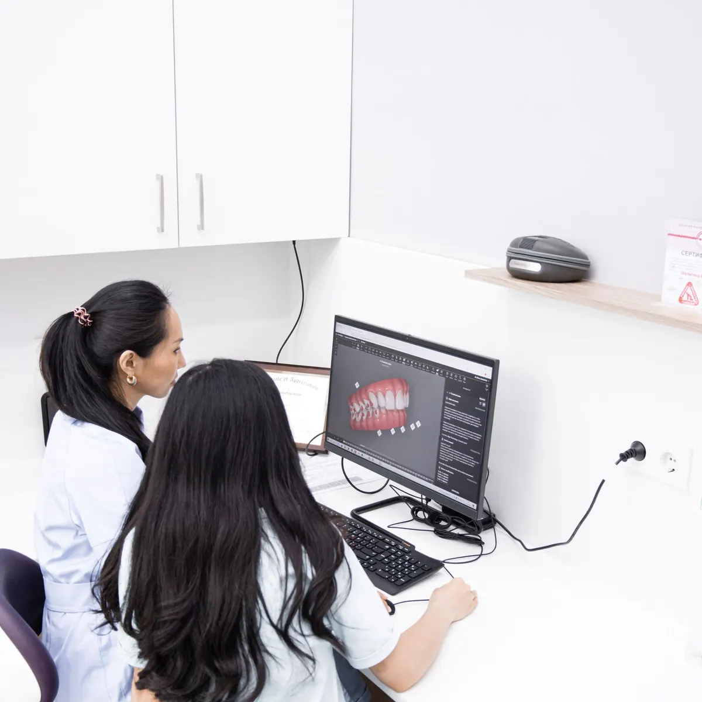
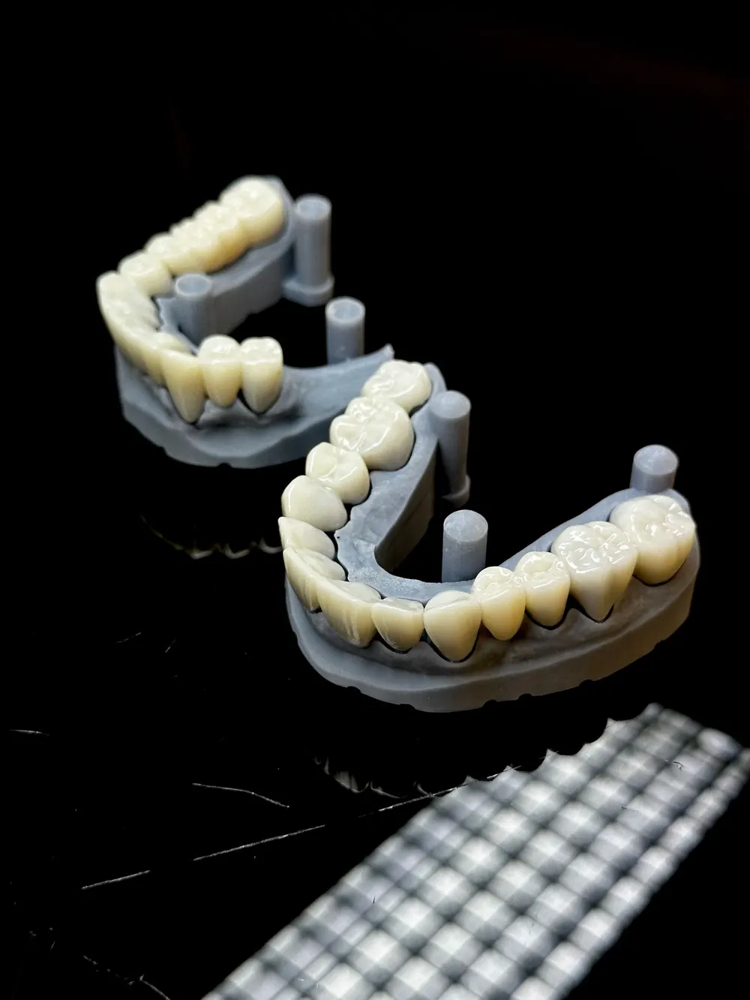

Scanner intraoral
Substitui a massa de moldagem na maior parte dos casos. Mais rápido e confortável para quem tem ânsia com moldagem.
- Limite
- Em algumas situações a moldagem tradicional ou radiografias ainda são necessárias.
InícioTecnologia
Escaneamento intraoral, modelos digitais e planejamento no computador. Ferramentas que ajudam a equipe a estudar o caso e a você entender o que está sendo proposto.

01 Do modelo ao digital
Toque em reproduzir ou arraste para ver, de forma ilustrativa, um modelo físico virando modelo digital.
A ponteira do scanner passa pelos dentes e registra a superfície em milhares de pontos. O computador une esses pontos e forma um modelo em 3D.
Animação ilustrativa — não representa exame de paciente
02 Ferramentas
Substitui a massa de moldagem na maior parte dos casos. Mais rápido e confortável para quem tem ânsia com moldagem.
Permitem medir espaços, estudar a mordida e comparar fases do tratamento lado a lado.
Uma representação visual de um caminho possível, usada para conversar e alinhar expectativas.

03 Planejamento
Com o modelo digital, a ortodontista, o dentista de estética e a periodontista estudam juntos o que é possível. O resultado desse estudo é um plano por escrito, explicado em consulta.

04 No site real
Nesta demonstração, os pedidos de agendamento montam uma mensagem de WhatsApp e nada é enviado. No site real da clínica, o formulário pode ligar na agenda do consultório.
Demonstração: no site real, liga na agenda do consultório (Clinicorp, Simples Dental…) ou no WhatsApp da recepção.